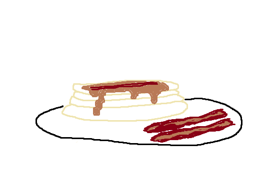

Home
Bacon Pancakes

Description
Like Jake the Dog, we're gonna be makin' bacon pancakes! Two great breakfast foods combined in an - you guessed it - indulgent sweet and savory meal.
Ingredients
- 6 slices of bacon
- 1 cup pancake mix
- 1/2 cup milk
- 1 tablespoon vegetable or avocado oil
- 1 large egg
- 1 teaspoon ground cinnamon
- maple syrup, for serving
Steps
- Cook bacon in a large cast iron or nonstick skillet over medium-heat, turning occasionally, until evenly browned. About 10 minutes. Drain bacon on paper towels.
- Combine baking mix, oil, milk, egg, and cinnamon in a bowl with a whisk until smooth. Mix two crumbled slices of bacon into batter.
- Heat non-stick skillet to medium-low heat. Cut bacon slices in half and lay two half slices into the pan. Pour batter over each half slice until covered.
- Cook until bubbles appear on the pancake batter. Flip and cook until golden brown. Repeat with the rest of the bacon and pancake batter.
- Serve with maple syrup and leftover bacon.
Recipe ingredients and steps sourced from Allrecipes